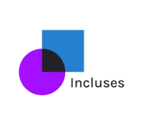

Sobre o Incluses
É de conhecimento geral que, nos últimos anos, o Brasil traz números cada vez mais preocupantes em relação à taxa de desemprego.
Quando falamos da situação da comunidade LGBTQIA+, os desafios são ainda maiores, uma vez que essas pessoas sofrem diariamente com o preconceito, exclusão, violação de seus direitos e dificuldade de acesso ao mercado de trabalho.
Resumidamente, o aplicativo Incluses facilitará o acesso da comunidade LGBTQIA+ ao mercado de trabalho, trazendo uma plataforma a qual relaciona as pessoas da comunidade LGBTQIA+ às empresas. Também, o ambiente virtual trará cursos principalmente sobre empreendedorismo. Assim, o usuário tem apoio para começar o seu próprio negócio.
Iniciar formulário
